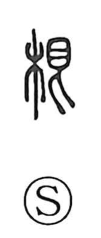

根

Uncategorized
Kun: ne, nekko | On: kon, gon
root ・ basis ・ foundation ・ source ・ support
Explanation
根 is a phono-semantic character: 木 “tree” gives the semantic field, while 艮 supplies both sound (kon) and image. 艮 shows an eye above a figure turning back—the baleful, curse-like gaze that makes one retreat—so it carries the sense of being checked or unable to advance. Joined with 木, it originally evoked a compacted, hardened patch of ground where a tree’s roots cannot easily penetrate. From this concrete scene the character came to mean the root itself; and because the root is what allows a tree to grow large, 根 naturally extended to the underlying basis or foundation of things—the supporting or authoritative ground upon which something rests.